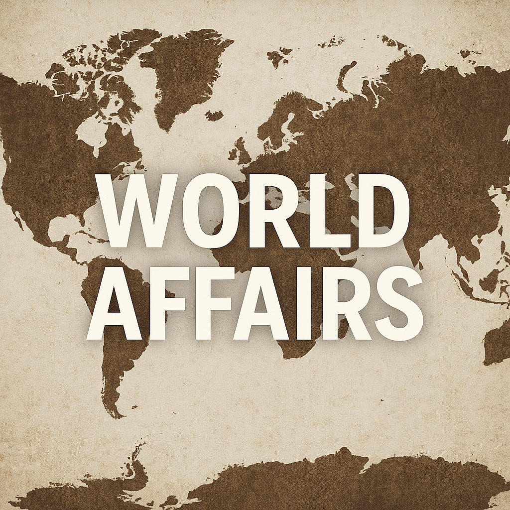

2026-03-11

【記事】イスラエル戦争激化でヨルダン川西岸の入植者暴力が急増、EU・英が即時停止要求
①今起きていること
イスラエルとパレスチナの対立が激化する中、ヨルダン川西岸地域においてイスラエル人入植者によるパレスチナ人への暴力行為が急増しています。国連の報告によれば、戦争開始以降、少なくとも6人のパレスチナ人が入植者による攻撃で命を落としました。これに対し欧州連合（EU）とイギリスは、暴力の即時停止をイスラエル側に強く要求しています。
②日本への影響
日本は中東地域での安定を重視しているため、現地の暴力激化はエネルギー供給の不安定化や国際社会の緊張拡大を通じて影響が出る恐れがあります。また、在留邦人の安全確保や人道支援活動にも影響を及ぼす可能性があります。さらに、国際的には難民問題や安全保障政策の見直しを迫られる事態も想定されます。
③今後どうなるか
もし暴力が収束しなければ、地域情勢はさらに悪化し、双方のさらなる衝突を誘発するリスクが高まります。国際社会の介入が強まる可能性があり、停戦合意や交渉の動きも加速するかもしれませんが、長期的な解決は依然として困難な状況が続く見通しです。
④日本の対策
日本政府は中東の安定に向けた外交努力を一層強化し、国連やEU、日本と関係の深い中東諸国との協力を深めることが求められます。また、現地邦人の安全確保措置や人道支援の拡充も並行して進めるべきです。さらに、エネルギー安定供給のための多角化戦略を推進することも重要です。
⑤なぜ起きたのか
今回の事態は、イスラエルと反体制勢力の間で進行中の戦争を背景に、個別の入植者がパレスチナ人住民に対して報復的な攻撃を行っているためと考えられます。また、複雑に絡み合う歴史的・宗教的対立、土地問題、政治的対立が根底にあります。イラン戦争が地域全体の緊張を高めていることも暴力の増加を助長する要因です。
⑥未来シナリオ
最悪のシナリオでは、暴力が拡大して地域全体の大規模な紛争に発展し、中東全域の不安定化と国際的な軍事介入を招く可能性があります。一方で、国際社会の強い圧力と包括的な和平プロセスの開始により、段階的に停戦と対話が実現し、長期的な和平構築の道が開ける楽観的なシナリオも存在します。
【参考情報】
- 国連報告：ヨルダン川西岸での入植者によるパレスチナ人殺害事件
- EUとイギリスによるイスラエルへの暴力停止要求声明
- 中東情勢とエネルギー安定に関する日本国内の安全保障報告
- イランとイスラエル間の現在の紛争状況に関する分析
（執筆：〇〇）